Examples for the corrgram package
Kevin Wright
2019-09-13
corrgram_examples.RmdAbstract
The corrgram package is an implementation of correlograms. This vignette reproduces most of the figures in Friendly (2002).
Setup
The data are 11 measures of performance and salary for 263 baseball players in the 1986 baseball season in the United States. The data were used in 1988 Data Expo at the Joint Statistical Meetings.
The first 6 rows of the data and the upper-left corner of the correlation matrix are given below.
## Name League Team Position Atbat Hits Homer Runs RBI Walks Years Atbatc Hitsc
## 1 Andy Allanson A CLE C 293 66 1 30 29 14 1 293 66
## 2 Alan Ashby N HOU C 315 81 7 24 38 39 14 3449 835
## 3 Alvin Davis A SEA 1B 479 130 18 66 72 76 3 1624 457
## 4 Andre Dawson N MON OF 496 141 20 65 78 37 11 5628 1575
## 5 A Galarraga N MON 1B 321 87 10 39 42 30 2 396 101
## 6 A Griffin A OAK SS 594 169 4 74 51 35 11 4408 1133
## Homerc Runsc RBIc Walksc Putouts Assists Errors Salary logSal
## 1 1 30 29 14 446 33 20 NA NA
## 2 69 321 414 375 632 43 10 475 2.676694
## 3 63 224 266 263 880 82 14 480 2.681241
## 4 225 828 838 354 200 11 3 500 2.698970
## 5 12 48 46 33 805 40 4 92 1.963788
## 6 19 501 336 194 282 421 25 750 2.875061## Atbat Hits Homer Runs RBI Walks Years Atbatc Hitsc Homerc
## Atbat 1.00 0.97 0.59 0.91 0.82 0.67 0.05 0.24 0.25 0.24
## Hits 0.97 1.00 0.56 0.92 0.81 0.64 0.04 0.23 0.26 0.20
## Homer 0.59 0.56 1.00 0.65 0.86 0.48 0.12 0.22 0.22 0.49
## Runs 0.91 0.92 0.65 1.00 0.80 0.73 0.00 0.19 0.20 0.23
## RBI 0.82 0.81 0.86 0.80 1.00 0.62 0.15 0.29 0.31 0.44
## Walks 0.67 0.64 0.48 0.73 0.62 1.00 0.14 0.28 0.28 0.33
## Years 0.05 0.04 0.12 0.00 0.15 0.14 1.00 0.92 0.90 0.73
## Atbatc 0.24 0.23 0.22 0.19 0.29 0.28 0.92 1.00 1.00 0.80
## Hitsc 0.25 0.26 0.22 0.20 0.31 0.28 0.90 1.00 1.00 0.78
## Homerc 0.24 0.20 0.49 0.23 0.44 0.33 0.73 0.80 0.78 1.00Figure 2
Figure 2 shows two ways to graphically display the correlation matrix using the panel.shade() and panel.pie() functions.
vars2 <- c("Assists","Atbat","Errors","Hits","Homer","logSal",
"Putouts","RBI","Runs","Walks","Years")
corrgram(baseball[,vars2], order=TRUE,
main="Baseball data PC2/PC1 order",
lower.panel=panel.shade, upper.panel=panel.pie,
diag.panel=panel.minmax, text.panel=panel.txt)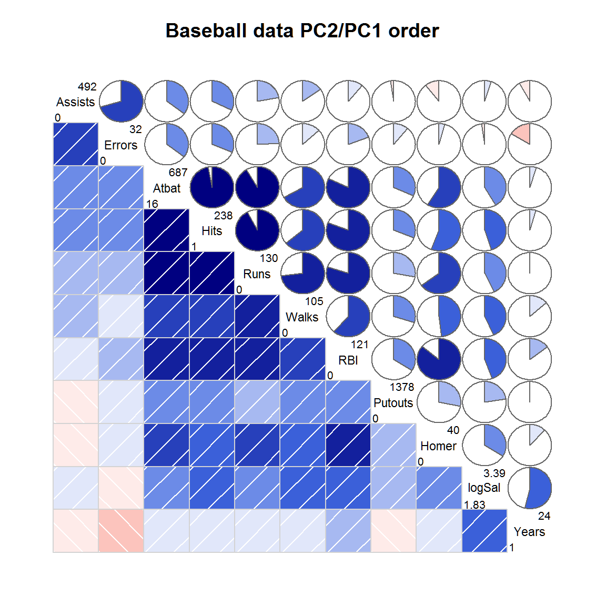
Figure 3
Figure 3 shows an eigenvector plot of the correlation matrix. This forms the basis of the orderings of the variables in the corrgram in Figure 4b in the next section, beginning with “AtBat” and then moving counter-clockwise up to “Years”. Note: Eigenvectors are unique only up to a change of sign.
baseball.cor <- cor(baseball[,vars2], use='pair')
baseball.eig <- eigen(baseball.cor)$vectors[,1:2]
e1 <- baseball.eig[,1]
e2 <- baseball.eig[,2]
plot(e1,e2,col='white', xlim=range(e1,e2), ylim=range(e1,e2))
text(e1,e2, rownames(baseball.cor), cex=1)
title("Eigenvector plot of baseball data")
arrows(0, 0, e1, e2, cex=0.5, col="red", length=0.1)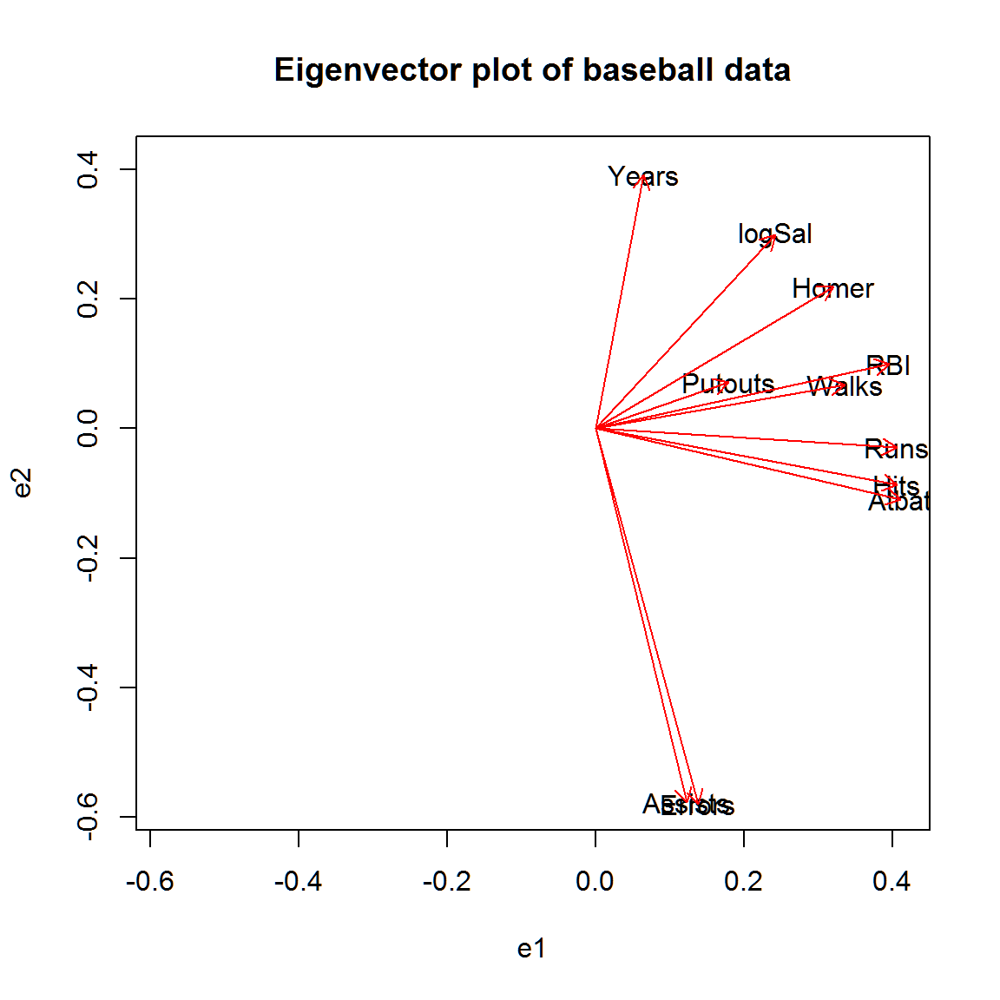
Figure 4a, 4b
In figure 4a the variables are sorted in the alphabetical order as given in the data.
In figure 4b, the variables are sorted according to the principal component ordering in Figure 3 to look for possible clustering of the variables. It is not surprising to see that more times at bat is strongly correlated with a higher number of hits and a higher number of runs.
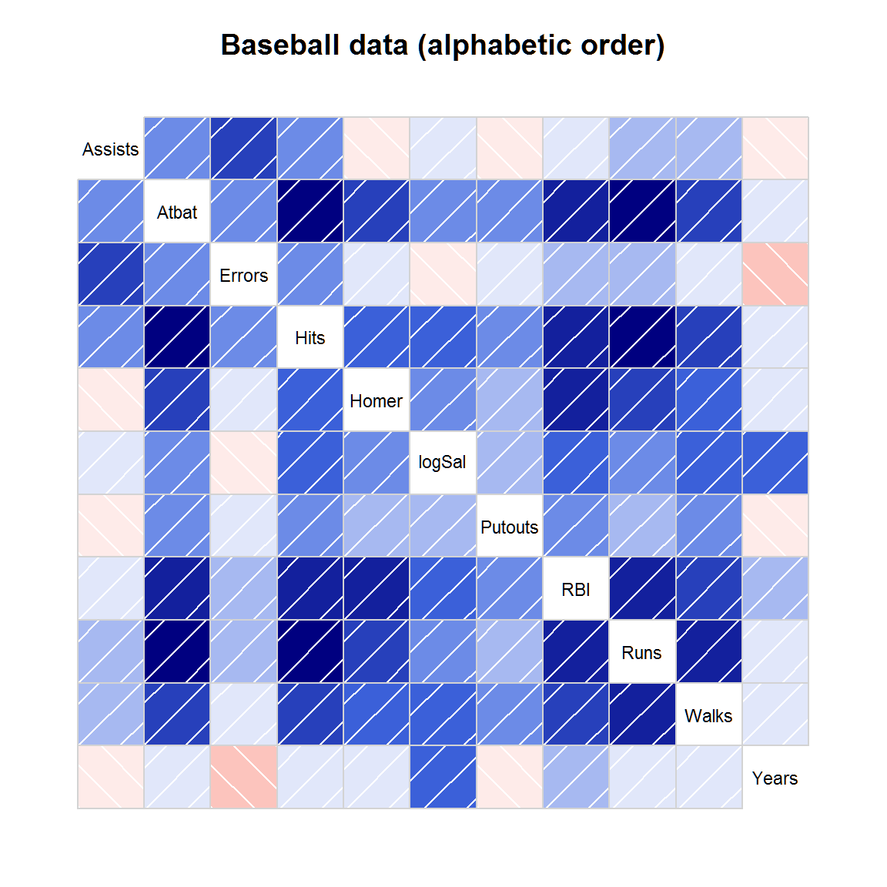
corrgram(baseball[,vars2], order=TRUE,
main="Baseball data (PC order)",
panel=panel.shade, text.panel=panel.txt)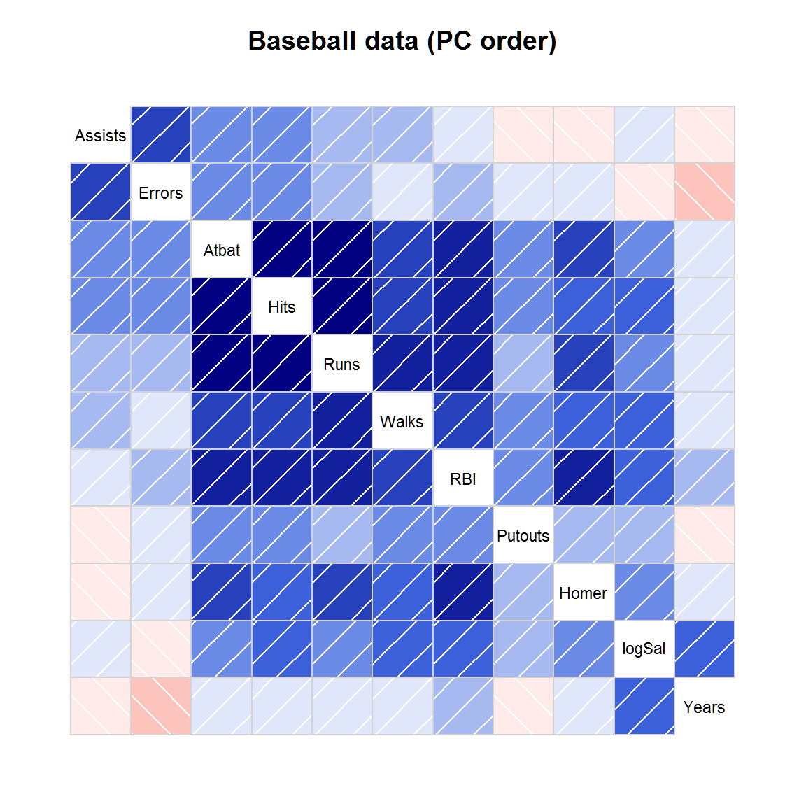
Figure 5
Figure 5 shows a corrgram for all numeric variables in the dataframe. Non-numeric columns in the data are ignored.
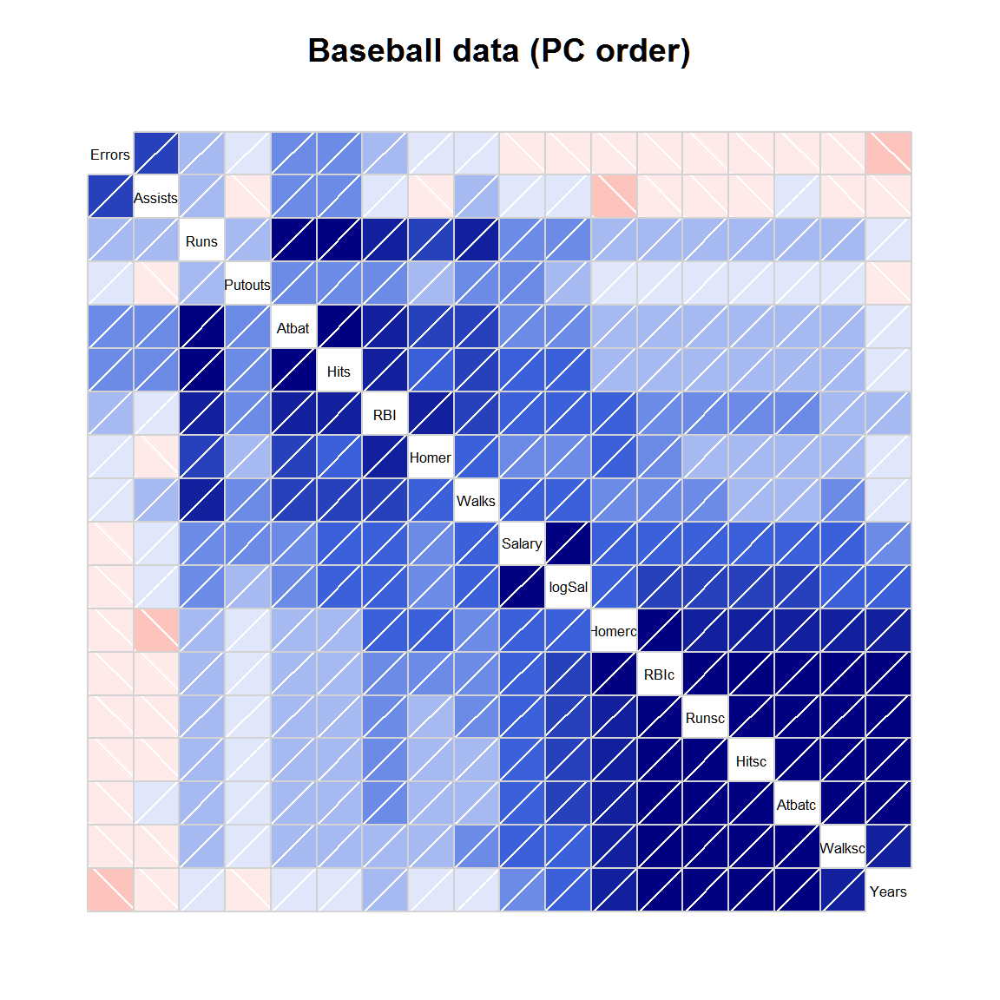
Figure 6.
Figure 6 shows a corrgram of automotive data on 74 different models of cars from 1979. There are two obvious groups of variables
Note, the arrangement is slightly different from Friendly.
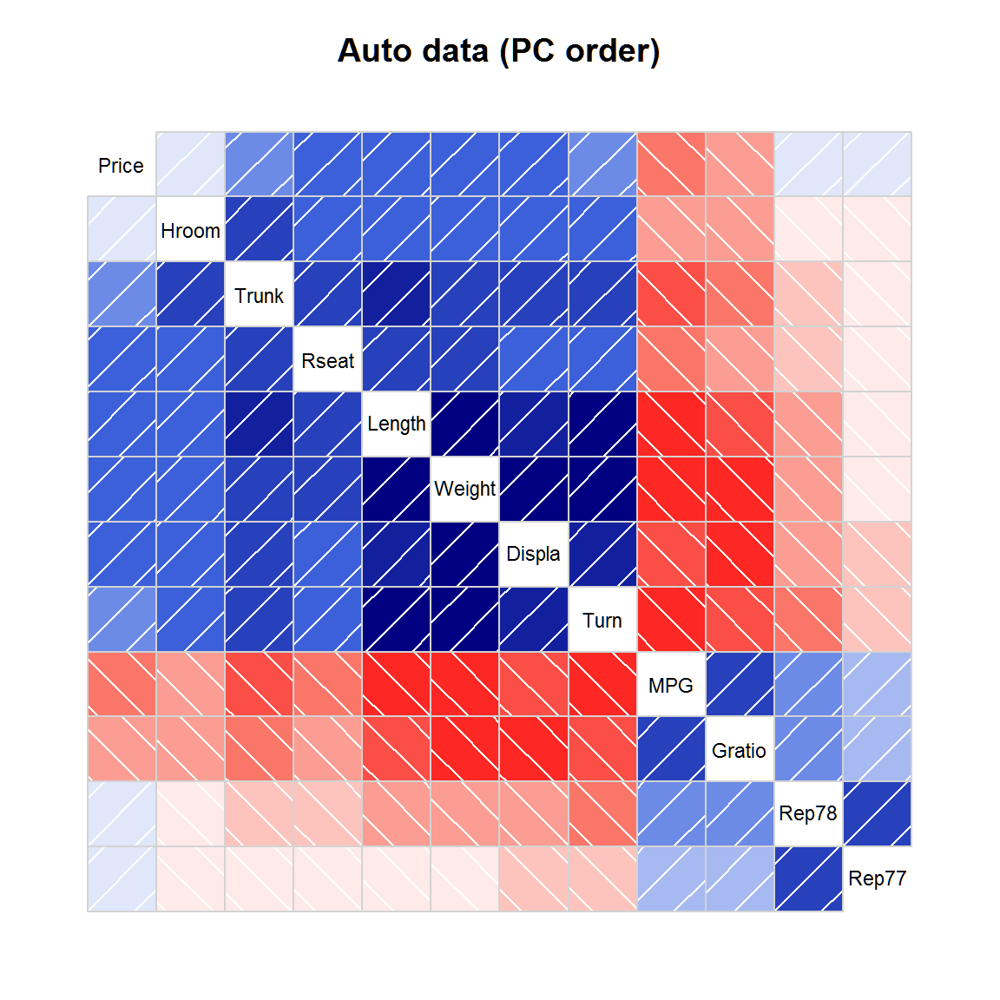
Figure 7.
The inverse of the correlation matrix expresses conditional dependence and independence of the variables.
The variables are sorted in the same order as in figure 4. One example interpretation is: controlling for all other variables, there is still a large correlation between Years and log Salary.
rinv <- function(r){
# r is a correlation matrix
# calculate r inverse and scale to correlation matrix
# Derived from Michael Friendly's SAS code
ri <- solve(r)
s <- diag(ri)
s <- diag(sqrt(1/s))
ri <- s %*% ri %*% s
n <- nrow(ri)
ri <- ri * (2*rep(1,n) - matrix(1, n, n))
diag(ri) <- 1 # Should already be 1, but could be 1 + epsilon
colnames(ri) <- rownames(ri) <- rownames(r)
return(ri)
}
vars7 <- c("Years", "logSal", "Homer", "Putouts", "RBI", "Walks",
"Runs", "Hits", "Atbat", "Errors", "Assists")
cb <- cor(baseball[,vars7], use="pair")
corrgram(-rinv(cb), main=expression(paste("Baseball data ", R^-1)))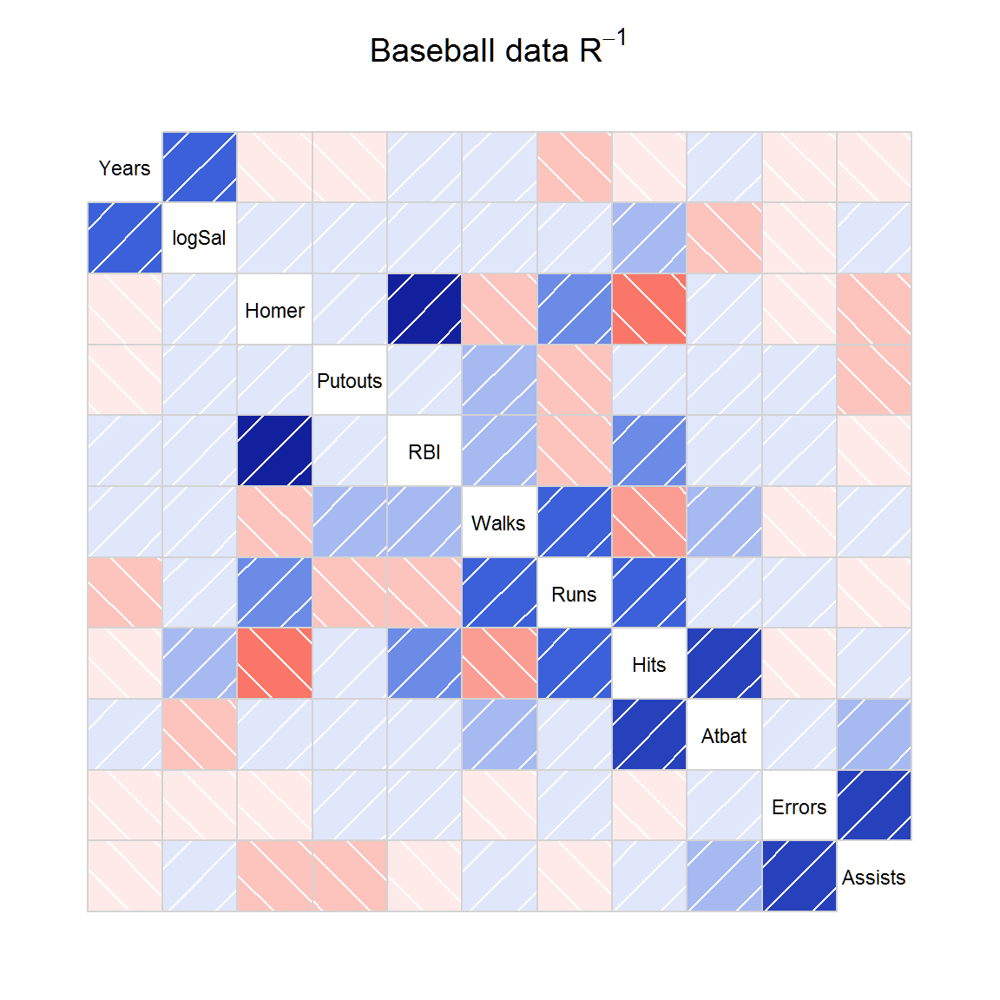
Figure 8
Figure 8 shows a partial independence corrgram for the automotive data, when Price and MPG are partialed out.
## Loading required package: Matrixpartial <- function(r, xvar){
# r is a correlation matrix
# Calculate partial correlation of y|x
yvar <- setdiff(colnames(r), xvar)
ri <- r[yvar,yvar] - r[yvar,xvar] %*% solve(r[xvar,xvar]) %*% r[xvar,yvar]
s <- diag(ri)
s <- diag(sqrt(1/s))
ri <- s %*% ri %*% s
ri <- as.matrix(Matrix::bdiag(ri, r[xvar, xvar]))
diag(ri) <- 1 # Should already be 1, but could be 1 + epsilon
colnames(ri) <- rownames(ri) <- c(yvar, xvar)
return(ri)
}
vars8a <- c("Gratio", "Rep78", "Rep77", "Hroom", "Trunk", "Rseat",
"Length", "Weight", "Displa", "Turn")
vars8b <- c("MPG", "Price")
vars8 <- c(vars8a, vars8b)
auto.cor <- cor(auto[, vars8], use="pair")
auto.par <- partial(auto.cor, vars8b)
corrgram(auto.par,
lower.panel=panel.pie, upper.panel=panel.pie,
main="Auto data, partialing out Price,MPG")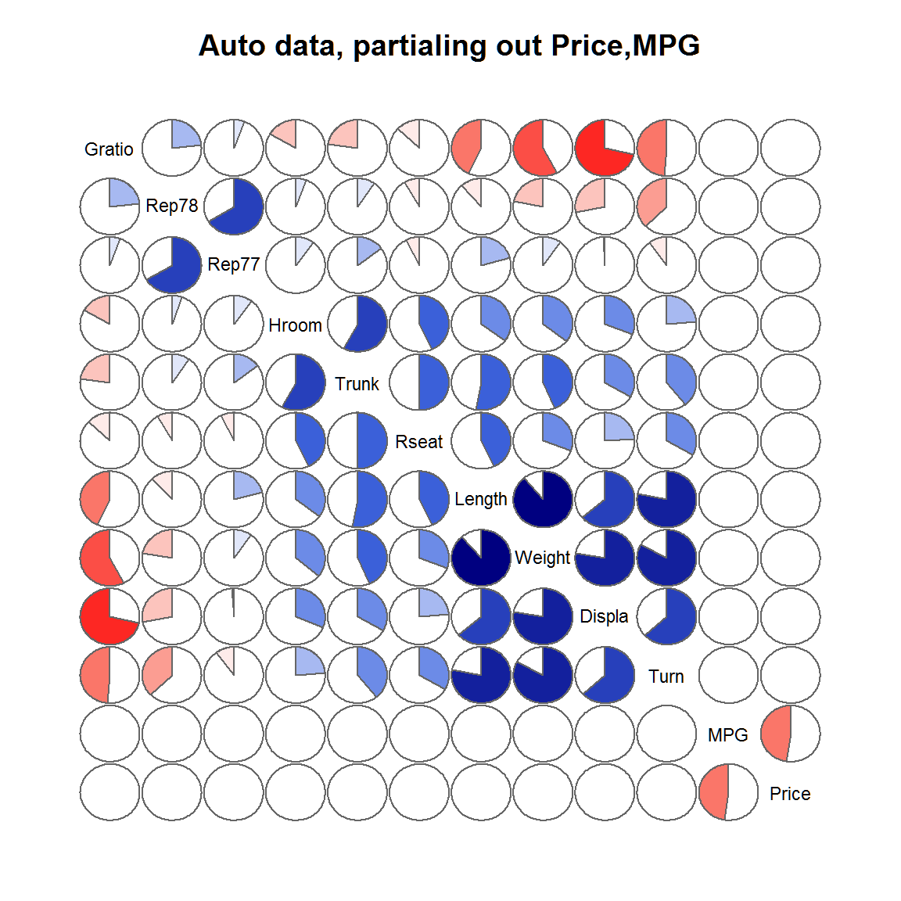
Figure 11
Figure 11 provides another way to display the data, using both ellipses and loess lines. Long, narrow ellipses represent high correlations while circular ellipses represent low correlations.
corrgram(baseball[,vars2], order=TRUE,
main="Baseball correlation ellipses",
panel=panel.ellipse,
text.panel=panel.txt, diag.panel=panel.minmax)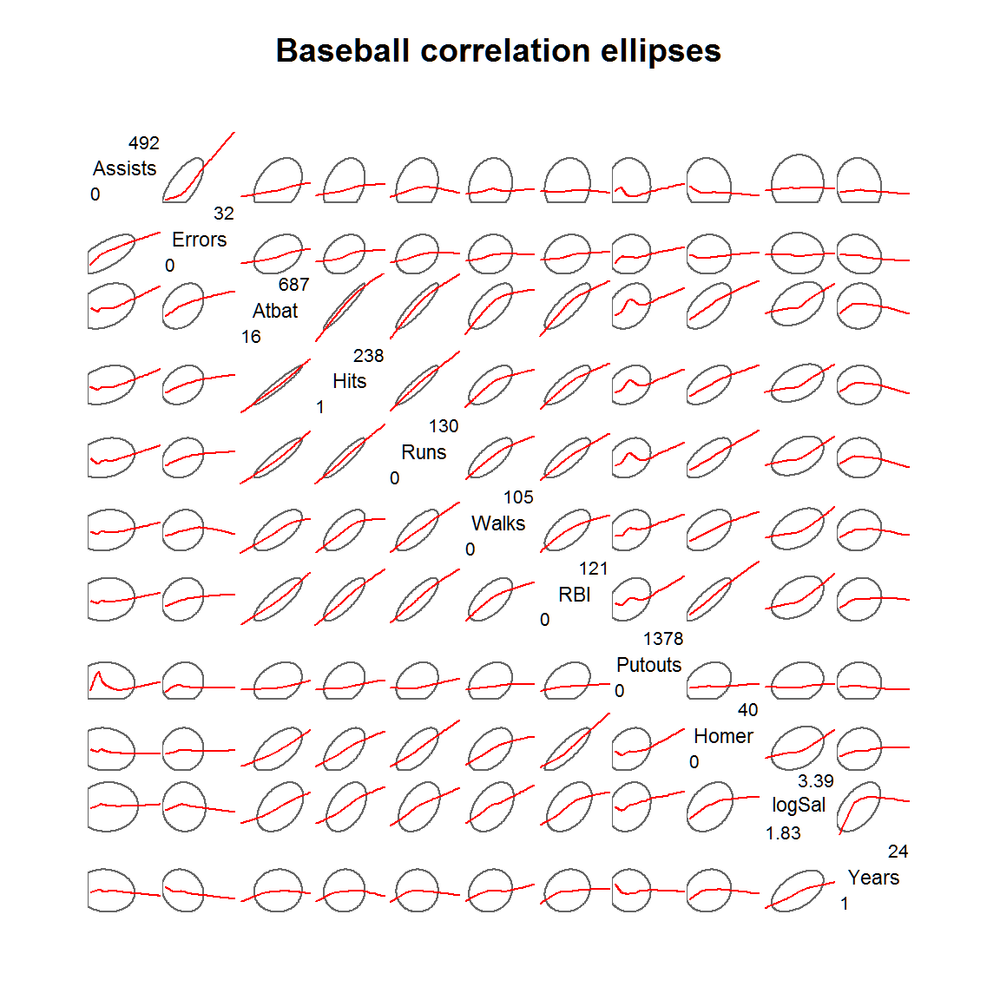
Further examples
Demonstrate density panel, correlation confidence panel
corrgram(iris,
main="Iris data with example panel functions",
lower.panel=panel.pts, upper.panel=panel.conf,
diag.panel=panel.density)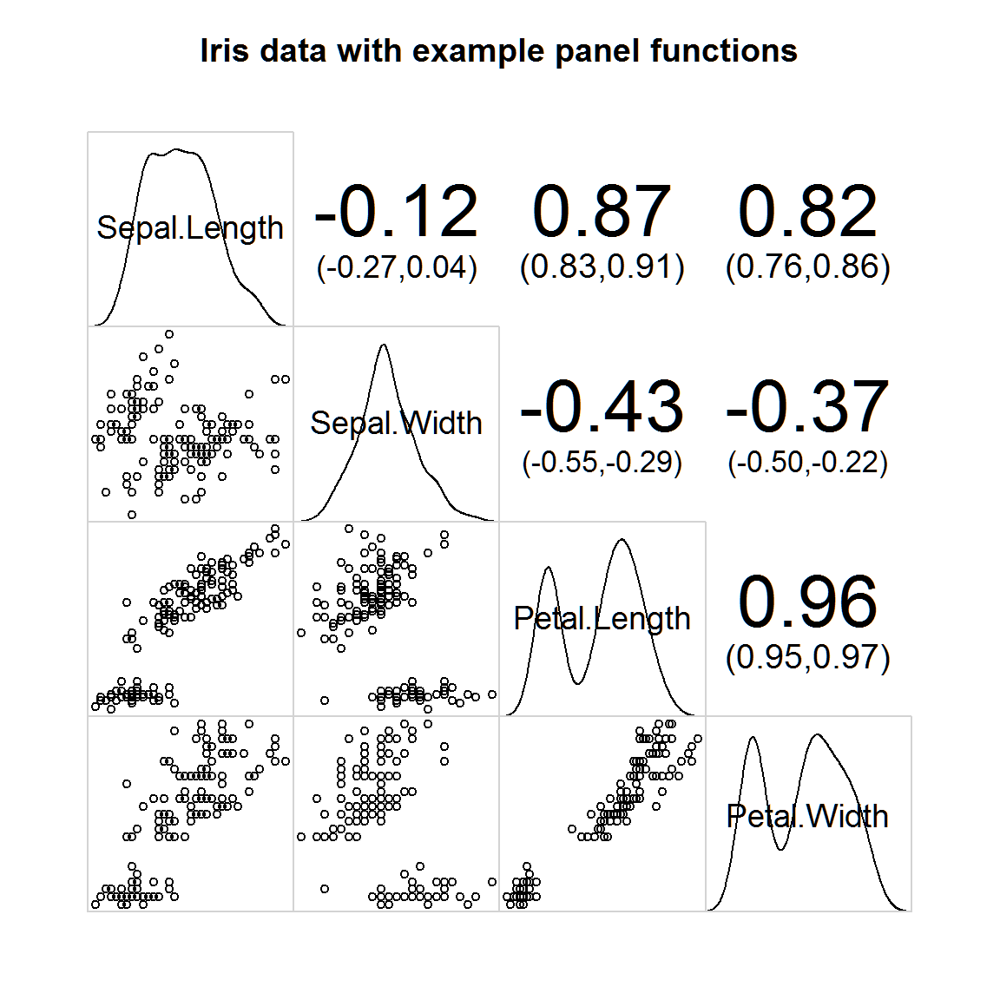
Demonstrate panel.bar, panel.ellipse, panel.minmax, col.regions
corrgram(auto, order=TRUE,
main="Auto data (PC order)",
lower.panel=corrgram::panel.ellipse,
upper.panel=panel.bar, diag.panel=panel.minmax,
col.regions=colorRampPalette(c("darkgoldenrod4", "burlywood1",
"darkkhaki", "darkgreen")))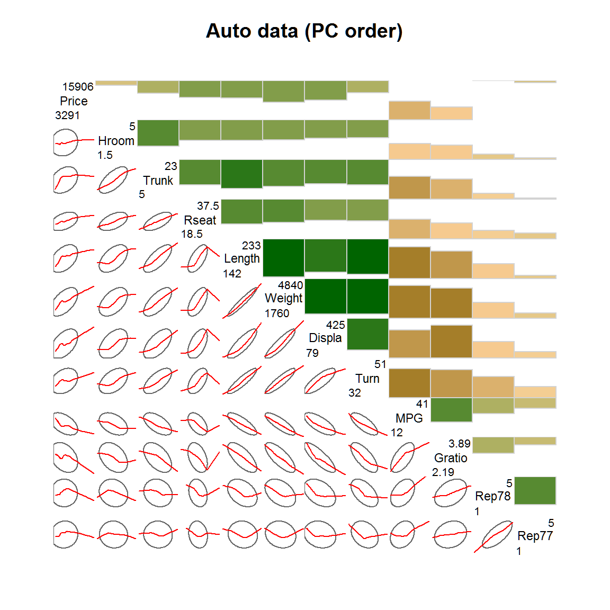
Correlation matrix
The vote data is a matrix.
# 'vote' is a correlation matrix, not a data frame
corrgram(vote, order=TRUE,
upper.panel=panel.cor, main="vote")
Ratings data
An example showing one way to plot ratings data.
load(url("https://github.com/alexanderrobitzsch/sirt/blob/master/data/data.ratings3.rda?raw=true"))
# jitter first, so the upper/lower panels are symmetric
data.ratings3 <- transform(data.ratings3,
c2=jitter(crit2), c3=jitter(crit3),
c4=jitter(crit4), c6=jitter(crit6))
library(corrgram)
panel.raters <- function (x, y, corr = NULL, col.regions, cor.method, ...) {
if (!is.null(corr))
return()
plot.xy(xy.coords(x, y), type = "p", ...)
abline(lm(y ~ x))
box(col = "lightgray")
}
corrgram(data.ratings3[,7:10], diag=panel.density, lower.panel=panel.raters, upper.panel=panel.conf)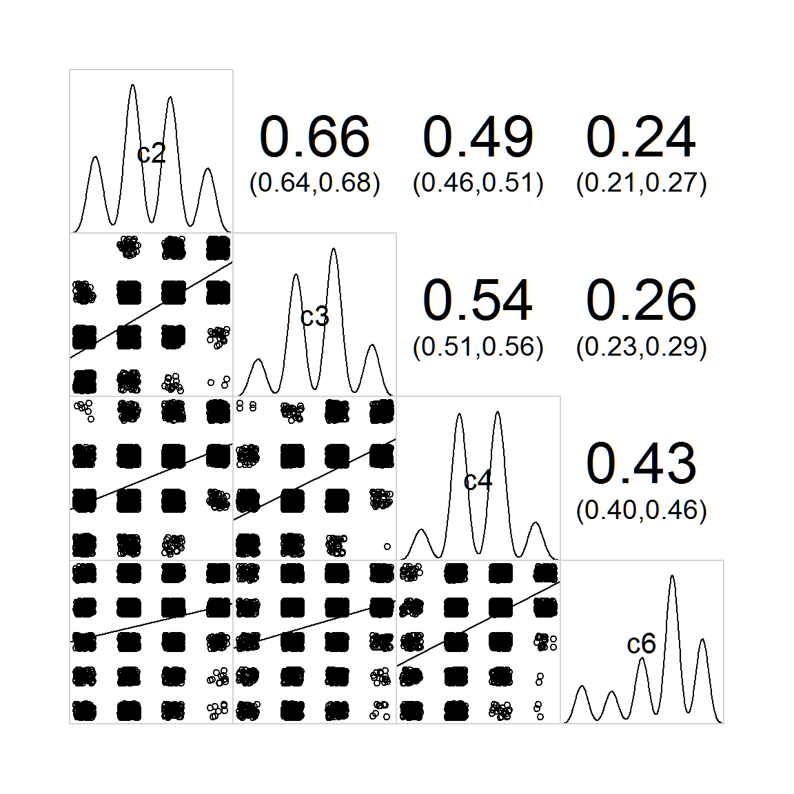
## R version 3.6.1 (2019-07-05)
## Platform: x86_64-w64-mingw32/x64 (64-bit)
## Running under: Windows 7 x64 (build 7601) Service Pack 1
##
## Matrix products: default
##
## locale:
## [1] LC_COLLATE=English_United States.1252 LC_CTYPE=English_United States.1252
## [3] LC_MONETARY=English_United States.1252 LC_NUMERIC=C
## [5] LC_TIME=English_United States.1252
##
## attached base packages:
## [1] stats graphics grDevices utils datasets methods base
##
## other attached packages:
## [1] Matrix_1.2-17 corrgram_1.14 knitr_1.24
##
## loaded via a namespace (and not attached):
## [1] Rcpp_1.0.2 lattice_0.20-38 rprojroot_1.3-2 crayon_1.3.4 digest_0.6.20
## [6] assertthat_0.2.1 MASS_7.3-51.4 grid_3.6.1 R6_2.4.0 backports_1.1.4
## [11] magrittr_1.5 evaluate_0.14 stringi_1.4.3 rlang_0.4.0 fs_1.3.1
## [16] rmarkdown_1.15 pkgdown_1.4.0 desc_1.2.0 tools_3.6.1 stringr_1.4.0
## [21] yaml_2.2.0 xfun_0.9 compiler_3.6.1 memoise_1.1.0 htmltools_0.3.6References
Friendly, Michael. 2002. “Corrgrams: Exploratory Displays for Correlation Matrices.” The American Statistician 56: 316–24. https://doi.org/10.1198/000313002533.